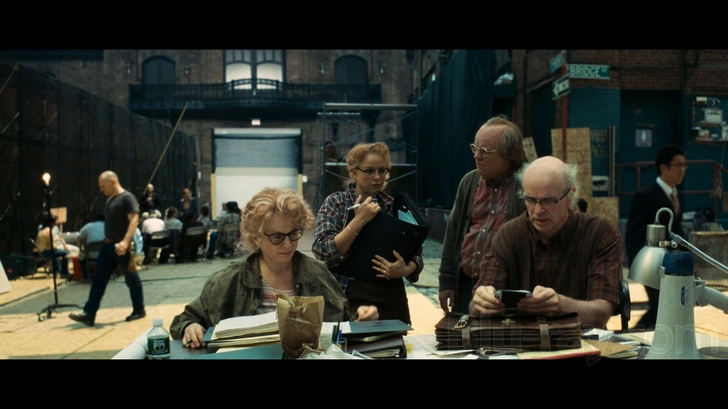

Jake Platt, August 8th 2024
★★★★★
Synedoche New York has been one of my favorite movies since I was in High School. It was one of the first movies I watched that left me with conflicting emotions. It was personal in the sense that I felt attacked by the writer and director Charlie Kaufman. The passage of time, the details on screen, the delivery of lines all are deliberatly conducted in a way that feels intentional and effortless at the same time. I routinely watch this movie every 5 years, as I get older and my perspective changes so does my interpretation and take away from the final scene of the movie.
Synecdoche New York IMDB page

Trivia!
- The movie was first written as a horror movie
- Philip Seymour Hoffman's character's last name, Cotard, is a reference to the Cotard delusion or Cotard's syndrome, also known as nihilistic or negation delusion.
- Caden is directing Death of a Salesman in the movie. A play which he later starred in on Broadway in 2012.